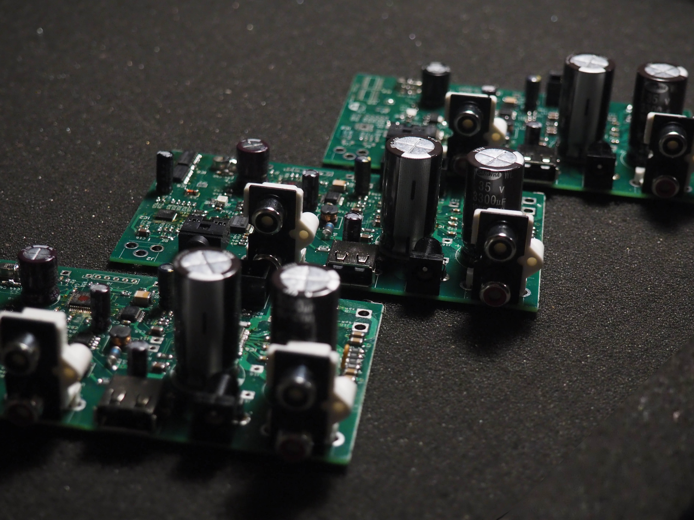
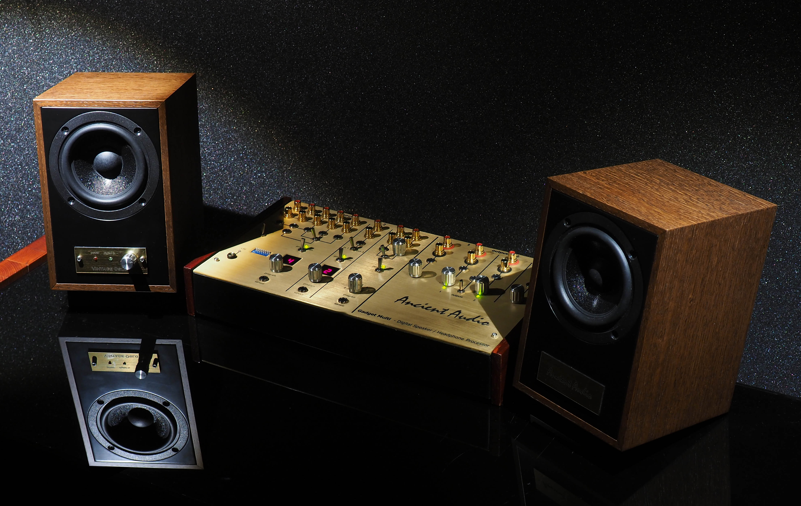
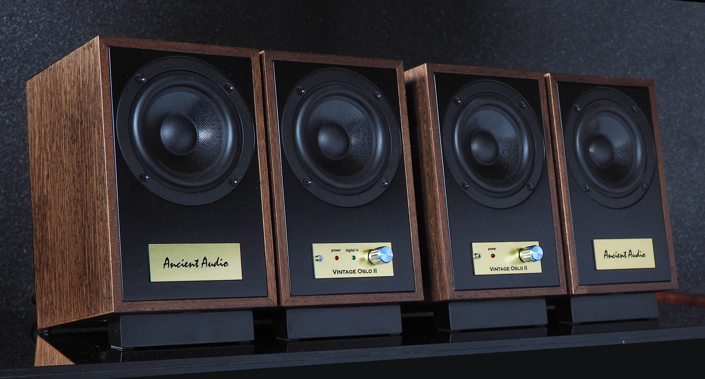

Vintage Oslo
From 27 years of personal passion of music, sound and engineering, Ancient Audio became world leader of hi-end audio products.
Amplifier “Silver Grand Mono”, CD player “Lektor Grand”, “Wing Speaker System” or Digital Speaker Processor set company reputation as top of top products.
However, company experience was used to design affordable, well sounding , easy to use systems.
Passion for music, passion for good sound moved us to design small, inexpencive , high sound quality speakers.
Introducing Studio Oslo in 2012, Ancient Audio created first small, compact , desktop speaker , however generated mature big sound in near field. Designed for small recording studios, Studio Oslo gained big attention to pure home applications, as small high quality active speaker for desktop systems, computers, mobile phones, tablets, TV sets. It was bestseller, despite of being out of Ancient Audio expensive product line.
The concept was successful, it was continued by Master Oslo, and totally new line, branded by Fram
Vintage Oslo keeps Ancient Audio way: classic look, but the most modern technology inside.
First model, got very positive opponions from the most experienced journalists and audiphiles. Positive response was lead us to make new , improved model. We thought about minor changes, but eventually, totally new speaker was made. They also uses Polish SXT driver, but with bigger voice coil. So, more powerful amplifiers were possible to apply.
But the biggest change is in input section. New Vinthage Oslo can be equip with digital input, S/P DIF. They are called "speakers". However it is integrated DAC, Digital Speaker Processor, Amplifier and Speaker System in one box. It made signal path short, and eventually more dynamic, more transparent sound to compare with use analog inputs.
However, we offer more affordable version, with analog inputs only.
This speaker uses Ancient Audio Digital Speaker Processor P3 MK I-E, what corrects speaker imperfections by unique algorithm.
It improves:
- dynamics
- natural sounding
- soundstage depth and width
- instrument separation
- focusing
- bass impact
Leaving away classic, power hungry and hot in touch class AB amplifiers, it is applied Class D solution with cool running, low power consumption, however still with warm sound signature.
Vintage Oslo were designed to play in medium size rooms, they were tuned in 27 sq.m. famous Ancient Audio room. Playing in moderate levels, they can fill even this area by spartial, natural sounding music.

But desks, and close distance listening are real kingdom of these minis. Due to single driver, and sophisticated DSP algorithm, they can be auditioned in real nearfield , as close as 70 cm. In that conditions, Vintage Oslo creates excellent space reproduction and holography-like sound imaging, incredible soundstage, with dynamic, high resolution, rich and warm sound. High sound quality enables speakers to use in professional musical applications, like electronic instruments or studio recording monitoring.
The Processor program was optimized for both kind of listening environment. Programs are selecting by back switch, with vivid and soft program for desktop, personal listening, as well as whole room play.
The cabinets makes Marek Godyń workshop, located in south of Poland. He has long experiece in acoustics and woodmaking, making sound panels, speakers and audio furniture
Handmade from solid MDF, veneered by polish natural oak by eco friendly way – even electricty for production is creaded by own electric panels.
There are three colors of polish oak available: natural, red brown, and black.
Speakers applies drivers, made by another polish coomany : STX www.stx.pl . With stable metal frame, paper diaphragm with special coating, and strong magnet, they can play booth fine nuances and full drum impact.
Speakers are very simply to connect, they have RCA high level sockets for CD player, tape recorder or external DAC.
Minijack input is suitable for low level sources, like computer, mobile phone, tablet, portable player.
The USB socket delivers power to charge phone, or to supply outboard bluetooth receiver
( optional )
Speakers are powered by outboard power supply, as well as optional battery.
Technical Specification:
- active speakers
- true nearfield, can be auditionned from 80 cm distance
- 10 cm cellulose fullrange driver
- down firing, high output bass reflex
- Digital Speaker Processor for correction of driver imperfections
- Three programs: for room listening, for desk soft, desk vivid listening
- 2 x 20 W class D amplifiers
- natural oak finish; black, red, brown
- oiled colors
- RCA inputs , 2 Vrms
- Minijack inputs , 0.7 Vrms
- Bluetooth receiver ( optional )
- Lightweight, high current power supply
- Dimensions ( w x h x d ) 130 x 240 x 180 mm
- Handmade in Poland , European Community